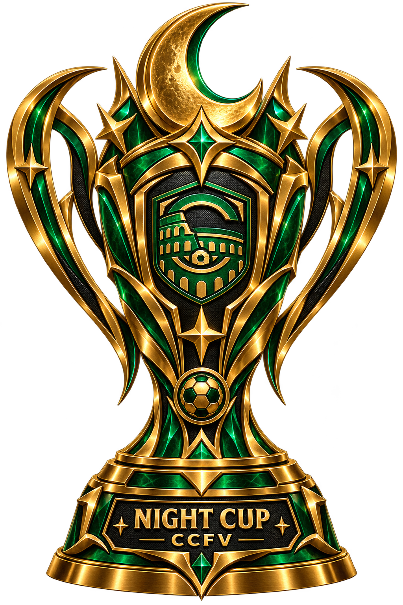

CCFV // ARQUIVO OFICIAL
A HISTÓRIA
A HISTÓRIA
É DOS CAMPEÕES.
Um registro permanente dos jogadores que conquistaram um título oficial da CCFV.
CCFVHALLOFICIAL
CCFV // TROFÉUS OFICIAISCADA COMPETIÇÃO
CADA COMPETIÇÃO
TERÁ SEU TROFÉU.
Os troféus têm identidade própria por competição. As artes finais podem ser substituídas sem alterar o sistema.
CHAMPIONS LEAGUE
CAMPEÃO DA ELITE
NIGHT CUP
CAMPEÃO DA NOITELIBERTADORES
IDA + VOLTACOPA DO MUNDO
32 SELEÇÕESCCFV // LIVRO DOS CAMPEÕESQUEM LEVANTOU
QUEM LEVANTOU
A TAÇA?
Somente títulos conquistados. Nenhum vice, semifinal ou campanha entra nesta área.
TÍTULOS0
CAMPEÕES0
COMPETIÇÕES0
CARREGANDO ARQUIVO OFICIAL...